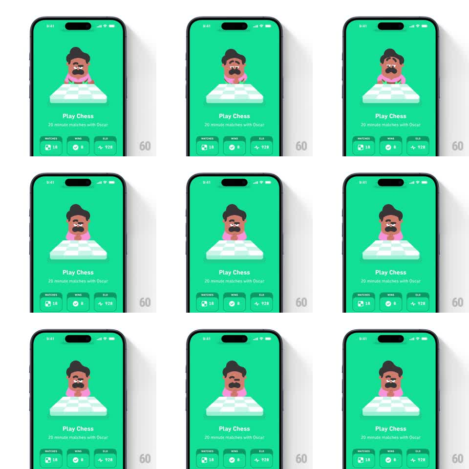

Media
Frame-by-frame

Rebuild this animation 1:1: Duolingo Chess's idle screen - Oscar, the mustached mascot in a pink shirt, sits behind a floating chessboard on a green background, gently bobbing with slow blinks while "Play Chess" and the stats pills (Matches 18, Wins 8, ELO 928) sit below.

Rebuild this animation 1:1: Duolingo Chess's idle screen - Oscar, the mustached mascot in a pink shirt, sits behind a floating chessboard on a green background, gently bobbing with slow blinks while "Play Chess" and the stats pills (Matches 18, Wins 8, ELO 928) sit below. ## Integration Integration: stack-agnostic spec - springs given as stiffness/damping, timed motions as duration + curve; map every value to your framework and animation library of choice. ## Scene Solid green screen. Center: Oscar - a cartoon man with brown hair, a thick black mustache, and a pink shirt - visible from the chest up behind a white floating chessboard with a soft shadow. Below: "Play Chess" title, "20 minute matches with Oscar" subtitle, and three stat pills (MATCHES 18, WINS 8, ELO 928). ## Motion spec Pattern: ambient mascot idle loop. - Oscar breathes: a slow body bob (translateY +/-3pt, 2.8s sine) with a matching head tilt (+/-2deg). - He blinks every 3-4s (eyelids close and open, 120ms), occasionally looking left and right (pupil shift, hold 600ms, return). - The chessboard floats on its own offset rhythm (translateY +/-4pt, 3.4s sine, phase-shifted from Oscar) with its shadow scaling subtly (1.0 -> 0.95) in sync. - Occasionally Oscar leans forward over the board (translateY +6pt, rotate 3deg, hold 800ms, spring back ~260/20). - Text and stat pills are static once loaded; the screen entrance fades everything up together (300ms, 60ms stagger). ## Calibration - All loops are slow sine waves - nothing springs or snaps during idle. - Oscar and the board move on different periods so the motion never looks mechanically synced. ## Reduced motion Oscar and the board are static; no blink or bob. ## Don't miss - The board casts a soft shadow on Oscar's shirt that shifts with its float. - The idle runs indefinitely without repeating an obvious loop point.